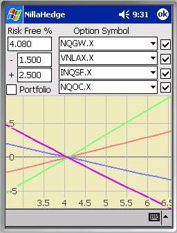
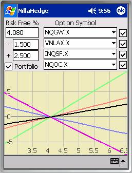
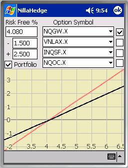

Rate Sensitivity ExplorerThe Rate Sensitivity Explorer provides a graphical view of how options behave when interest rates change. After gaining some familiarity with the Rate Sensitivity Explorer, you’ll probably discover that call options (NQGW.X & VNLAX.X) increase in value when interest rates rise, while put options (INQSF.X & NQOC.X) gain value as rates fall.
The X-axis depicts prospective risk free rates of interest, so all curves will pass through (rfr, 0). The Y-axis depicts the percentage change in the value of the issue (or portfolio) at each X-value. The colors assigned to the curves are red, green, blue, and purple ordered from topmost symbol to bottom, e.g. NQGW.X – red, VNLAX.X – green, etc. as shown in the screenshot at left.
The four checkboxes on the right side of the dialog control whether the option symbol currently displayed in

the adjacent combo-box will be plotted. They’re all enabled in this example to facilitate comparing the rate sensitivity of the selected options to that of the portfolio as a whole.Positions must exist in the portfolio for the Portfolio checkbox to be enabled. When enabled and the checkbox is checked, an additional curve is plotted in black, representing the cost weighted average of the rate sensitivity of all option positions in the portfolio.
In the second example, the interest rate sensitivity of the portfolio is relatively low. If your interest is in getting a better view of the rate sensitivity of the portfolio, you can disable some of the more rate sensitive options and the plot will rescale to fill the vertical extent of the plot area. In the example below, VNLAX.X, INQSF.X, and NQOC.X have been disabled. It’s now apparent that the option portfolio will increase in value by 2% if the risk free rate rises from its current 4.08% to 6%.

Risk Free RateThe Risk Free Rate edit box displays the currently stored value for the risk free rate. It’s expressed as a percentage with a default value of 3%.
The ‘-‘ edit box specifies how far below the current risk free rate to set the low X-value in the plot. This value cannot exceed the risk free rate.
The ‘+’ edit box specifies how far above the current risk free rate to set the high X-value in the plot.